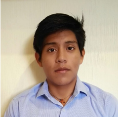
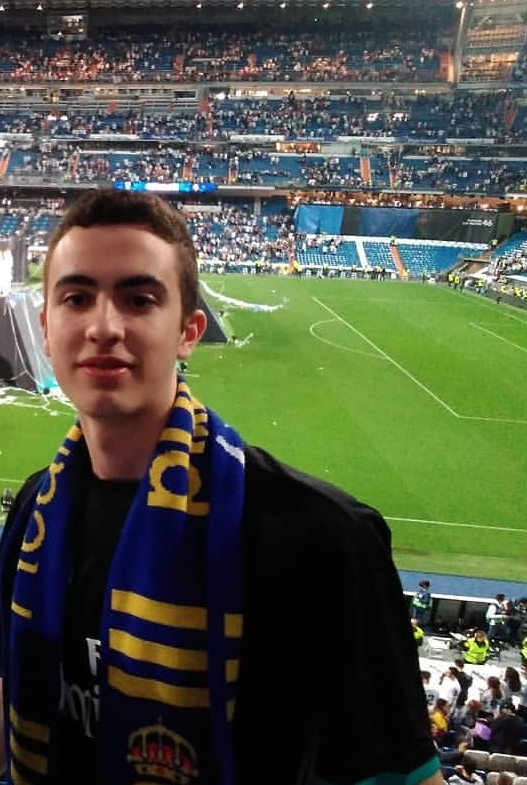

- Luis
- Jorge
- Matias
- Muad
- Olga
- Pablo
Luis Gabriel Román Santillán

Soy Luis Román, tengo 24 años y soy estudiante de Ingeniería de Computadores.
Me considero una persona muy responsable, constante y perseverante en cualquier objetivo que me propongo ya que me gusta terminar y conseguir lo que empiezo.
Además, debido a que me gusta seguir ampliando mi formación, creo que también soy muy trabajador y aplicado.
Me gustan los deportes, en especial los que están relacionados con el atletismo, ya que su filosofía de entrenamiento aplicado a tu día a día te ayuda a afrontar
problemas de otra forma.
Me podeís contactar a través de mail: luisgabr@ucm.es
Jorge San Frutos Iglesias

Estudiante de Ingeniería de Computadores aficionado al deporte y a los viajes.
Me gusta jugar a la petanca los domingos y pasar el rato con las palomas en el parque.
Mi correo es jsanfrut@ucm.es
Matias

Mi nombre es Matías Amor, tengo 23 años y estudio la carrera de Ingeniería de computadores.
Soy una persona activa, responsable y consecuente con lo que hago. Siempre estoy dispuesto
a aprender cosas nuevas. Soy trabajador y constante, no me gusta dejar las cosas que empiezo a medias.
Me gusta hacer deporte, en concreto el baloncesto, ver series, etc.
Mi correo es: matiamor@ucm.es
Muad
De acuerdo a Greimas, es un enunciado ya sea gráfico o fónico que nos permite visualizar las palabras que escuchamos y que es utilizado para manifestar el proceso lingüístico. Mientras Hjelmslev usa ese término para designar el todo de una cadena lingüística ilimitada (§1).
En lingüística, no todo conjunto de signos constituye un texto.
Olga
Texto como "diálogo" y texto como "monólogo"
Otra noción importante es que los textos (y discursos) no son solo "monologales". En lingüística, el término texto sirve tanto para producciones en que solo hay un emisor (situaciones monogestionadas o monocontroladas) como en las que varios intercambian sus papeles (situaciones poligestionadas o policontroladas)
como las conversaciones. El texto contiene conectores y signos, etc.
Pablo Sáenz Bullón

Me llamo Pblo Saenz Bullon, tengo 22 años y estudio Ingeniería Informática.
En mi tiempo libre me gusta cortar jabones mientras monto en monociclo, me encanta programar cosas utiles y ayudar a mis conocidos en todo lo posible así como ver películas de ciencia ficción y jugar a videojuegos.
Mi correo electrónico es pabsaenz@ucm.es